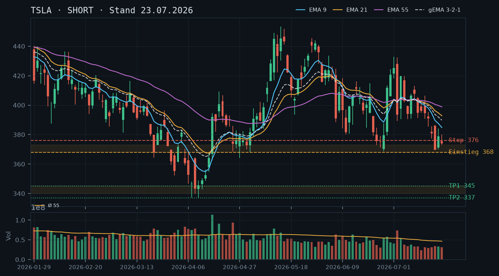
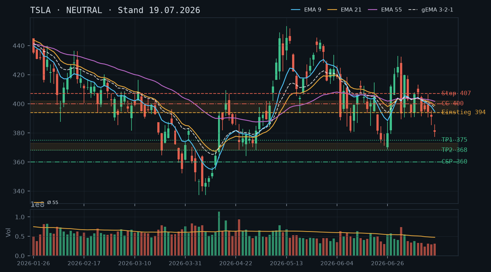
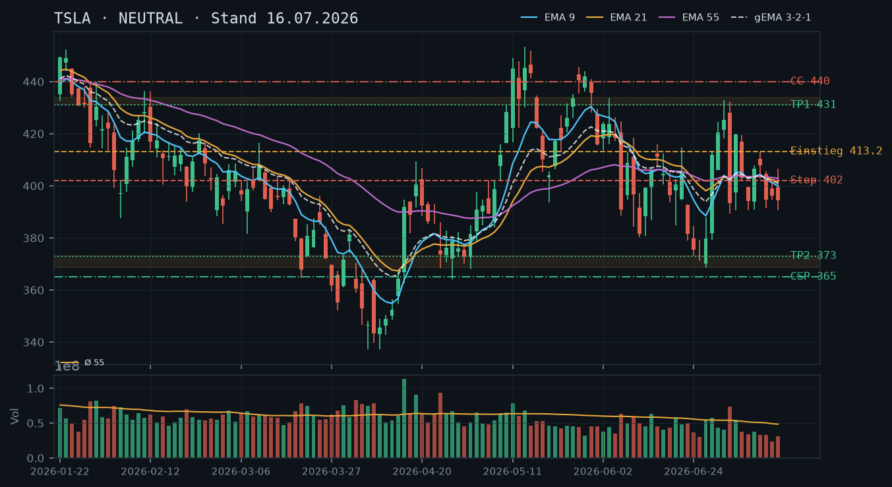
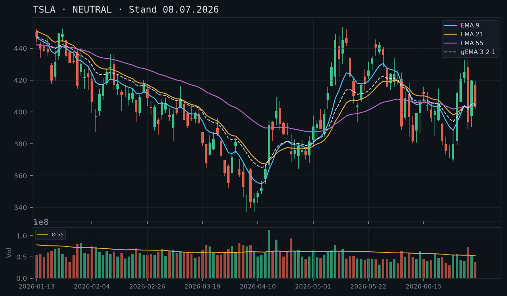

TSLA bricht mit -5,82% auf 352,25 brutal durch das dreifach bestätigte Junitief-Cluster – der Short Put 360 (Verfall morgen) ist tief im Geld und erfordert sofortiges Handeln, während der Short Call 400 wertlos verfällt.

Der seit dem 08.07.-Hoch bei 413,16 laufende Abwärtstrend hat sich heute mit einem Gap-Down auf 352,25 (-5,82%) dramatisch beschleunigt. TSLA hat damit das dreifach bestätigte Junitief-Cluster (368,60–373,05 vom 24./25./26.06.) klar nach unten durchbrochen – ein Strukturbruch ersten Grades. Die Range, die in den letzten drei Analysen beschrieben wurde (369–433), ist nach unten aufgelöst. Nächster relevanter Support liegt im Bereich 340–345 (Apriltiefs 07./08.04.: 337,24–343,25), darunter die Extremtiefs vom 27./30.03. bei 352–355. Der Bereich 368–373 wird zur neuen Widerstandszone (ehemalige Unterstützung).
Die gestrige Kerze (22.07.) zeigte bereits Schwäche: Schlusskurs 374,01 unter dem 3-Tages-Cluster. Der heutige Kurs von 352,25 mit -5,82% und einem Tiefstkurs, der deutlich unter dem Junitief-Cluster liegt, ist ein klares Breakdown-Signal – keine Umkehrformation, kein Doji, kein Hammer erkennbar. Das Volumen ist mit rel_volumen 0,66 am Vortag unspektakulär, was darauf hindeutet, dass kein Capitulation-Flush vorliegt – das Risiko weiterer Abgaben ist erhöht.
EMA9 (384,79) > EMA21 (392,77) > EMA55 (398,83) – alle EMAs fallen und liegen weit über dem aktuellen Kurs (352,25). Der Abstand zum EMA9 beträgt rund 9,2%, zum EMA55 sogar 13,2%. Der gema_321 (389,79) liegt ebenfalls weit über dem Kurs – der gesamte EMA-Verbund fungiert jetzt als massiver Widerstandsblock. Kein Buying-the-Dip-Signal; die EMA-Struktur bestätigt den beschleunigten Downtrend.
| Richtung | Short |
| Einstieg | Kein neuer Short-Einstieg empfohlen – bestehende Positionsbereinigung hat Priorität. Für Aggressive: Pullback-Short in den Bereich 368–373 (ehemaliger Support, jetzt Resist) |
| Stop | 376,00 (über dem ehemaligen Junitief-Cluster) |
| Ziel | 340,00 (Apriltiefs-Cluster) / 337,00 (Tief 07.04.) |
| CRV | Pullback-Einstieg ~368: Ziel 340 → ~1,8:1 / Ziel 337 → ~2,0:1 |
Der Short Put 360 (Verfall 24.07., 1 DTE) ist mit dem Kurs bei 352,25 rund 2,2% tief im Geld – sofortiger Handlungsbedarf. Der Short Call 400 (Verfall 24.07., 1 DTE) ist mit Abstand -11,9% weit aus dem Geld und verfällt morgen nahezu wertlos. Kein neues Stillhalter-Geschäft, bevor die kritische Put-Position gemanagt ist.
Bestand: SHORT PUT 360, Verfall 24.07. (1 DTE): Der Strike liegt 7,75 Punkte über dem aktuellen Kurs (352,25) – die Position ist tief im Geld (ITM). Optionspreis laut Snapshot: 5,13 (Mid), aber der innere Wert beträgt bereits ~7,75 – der aktuelle Marktpreis dürfte deutlich höher liegen als die 5,13 aus dem Snapshot (Snapshot-Zeitstempel 11:36, Kurs war wohl noch nicht auf diesem Niveau). Handlungsoptionen: (1) SCHLIESSEN – Sofortige Glattstellung empfohlen, um das Andienungsrisiko zu eliminieren. Bei Andienung würde 100 Aktien zu 360,00 zugeteilt, was bei Kursen um 352,25 einem Buchverlust von ~7,75 pro Aktie entspricht – technisch ist kein schneller Bounce zurück über 360 absehbar. (2) ROLLEN – Falls Rollen gegenüber Schließen prämientechnisch sinnvoll: Roll auf Strike 345–350, Verfall 01.08.2026 (nächster Standard-Freitag, 9 DTE). Strike 345 liegt knapp über den Apriltiefs (337–343) und bietet bei erhöhter IV potenziell eine Nettoprämie oder zumindest Prämienausgleich. In der Kette prüfen: Kann der 360er mit einem Kredit oder kostenneutral auf 350/345, Verfall 01.08., gerollt werden? Delta-Ziel <-0,30 nach Roll. (3) ANDIENUNG akzeptieren – Nur wenn der Anwender bereit ist, 100 Aktien zu 360,00 zu übernehmen und die Position als Covered-Call-Basis zu nutzen. Angesichts des intakten Downtrends ohne erkennbaren Support bis 340–345 ist dies die risikoreichste Option. EMPFEHLUNG: Schließen oder kostenneutral rollen hat Priorität. SHORT CALL 400, Verfall 24.07. (1 DTE): Aktueller Preis laut Snapshot 3,00 (Mid), Strike 11,9% über aktuellem Kurs – mit hoher Wahrscheinlichkeit wertloser Verfall morgen. Keine Aktion erforderlich, auslaufen lassen. Hinweis: 100 Aktien im Bestand vorhanden – der Call war als Covered Call gedeckt.
Die drei vorangegangenen Analysen (08.07., 16.07., 19.07.) haben eine volatile Range zwischen ~369 und ~433 identifiziert. Diese Range ist heute mit dem Gap-Down auf 352,25 (-5,82%) nach unten aufgelöst worden. Der Schlüssel-Support, das dreifach bestätigte Junitief-Cluster (368,60–373,05 vom 24., 25. und 26. Juni), wurde ohne erkennbaren Widerstand durchbrochen. Damit ist die Analyse vom 19.07. bestätigt und verschärft: Die damalige Short-Empfehlung mit Ziel 368/375 ist übertroffen.
Die neuen strukturellen Referenzpunkte: Widerstand oben: 368–373 (ehemaliger dreifach bestätigter Support, jetzt Resistance – First Level). Dahinter der EMA-Verbund-Block bei 384–399. Support unten: 340–345 (Apriltiefs-Cluster: Tief 07.04. bei 337,24 / Tief 08.04. bei 339,67 / Schlusskurse 343–348). Dieser Bereich hat im April mehrfach gehalten und ist der nächste technisch relevante Support. Darunter: 330er-Zone (Märztiefs 27./30.03. bei 352–355 sind bereits durchbrochen; tiefer gelegene Tiefs aus Ende März bei 355,28).
Die Trendstruktur zeigt sinkende Hochs (413,16 am 10.07. → 386,61 am 20.07. → 380,17 am 22.07.) und jetzt einen aggressiven Tiefstkurs-Ausbruch. Ein Short-Bias ist klar angezeigt.
Die letzten drei Kerzen zeichnen ein klares Bild: 21.07. – Bullischer Bounce-Versuch (Tief 369,98, Schluss 378,93), aber Schluss unter den EMAs. 22.07. – Bearishe Kerze (Open 375,53, Schluss 374,01, Range 372,90–380,17) – kein Follow-Through des Bounce, Konsolidierung auf niedrigem Niveau. 23.07. (Snapshot 11:36) – Gap-Down mit Kurs 352,25 und -5,82%; die Tageskerze ist noch nicht geschlossen, aber der Preisverfall deutet auf eine starke bearishe Marubozu-Struktur oder eine bearishe Outside-Candle hin.
Das Volumen am 22.07. (rel_volumen 0,66) war unterdurchschnittlich – kein Capitulation-Signal, kein Selling Climax. Das bedeutet: Der heutige Kursverfall trifft auf noch nicht erschöpfte Verkäufer. Ein V-förmiger Bounce ist unwahrscheinlich ohne signifikant erhöhtes Volumen auf Käuferseite.
EMA9: 384,79 | EMA21: 392,77 | EMA55: 398,83 | gema_321: 389,79. Alle EMAs fallen und sind in bearisher Reihenfolge (EMA9 < EMA21 < EMA55 – aber alle über dem Kurs). Der Kurs bei 352,25 liegt 9,2% unter EMA9, 10,3% unter EMA21 und 13,2% unter EMA55. Der gesamte EMA-Verbund (gema_321: 389,79) liegt ~10,7% über dem aktuellen Kurs. Dies ist ein extrem überdehnte Abwärtsbewegung relativ zu den EMAs – kurzfristige technische Erholungen sind möglich (Mean-Reversion-Gefahr), aber das übergeordnete Bild ist klar bärisch. Ein Rücklauf in den Bereich 368–373 (ehemaliges Support-Cluster, jetzt Resist) wäre der erwartbare Rebound-Bereich – nicht mehr.
Setup A – Kein sofortiger Neueinstieg (bevorzugt): Angesichts der Overnight-Gap-Down-Situation und des laufenden Positionsmanagements (Short Put 360 ITM) ist kein neuer Direktional-Trade sinnvoll. Priorität: Bestandsbereinigung.
Setup B – Pullback-Short (aggressiv, für neue Trades ohne Bestandsrisiko): Einstieg: 368,00–373,00 (Pullback in ehemaliges Support-Cluster, jetzt Resistance). Stop: 376,00 (über dem Cluster-Bereich + Puffer). Ziel 1: 345,00 (CRV: 368 Einstieg → (368-345)/(376-368) = 23/8 = ~2,9:1). Ziel 2: 337,00 (CRV: ~3,9:1). Dies ist ein High-Quality-Setup, falls der Pullback kommt – klare Zones, gutes CRV, logische Struktur.
Setup C – Long-Scalp bei Capitulation (spekulativ, nur Intraday): Falls heute ein Volumen-Spike mit rel_volumen >2,0 und eine Hammer/Doji-Kerze im Bereich 340–345 erscheint: spekulativer Intraday-Long mit Stop unter 337. Ziel: 368 (ehemaliger Support). CRV: ~(345→368)/(345→337) = 23/8 = ~2,9:1. Nur für sehr erfahrene Trader ohne Bestandspositionen.
Dies ist die wichtigste Position. Der Kurs bei 352,25 bedeutet: der Strike 360 ist ~7,75 Punkte im Geld (ITM). Der Snapshot-Preis von 5,13 (Mid) stammt aus 11:36 Uhr und dürfte bei einem Kurs von 352,25 nicht mehr aktuell sein – der innere Wert allein beträgt bereits 7,75, die Position hat wahrscheinlich einen Marktpreis von 8,00–10,00 oder mehr. Der Anwender muss den aktuellen Mid-Preis der Option direkt in IBKR prüfen.
Option 1 – Schließen (empfohlen als sicherste Variante): Rückkauf des Short Put 360, Verfall 24.07. zum aktuellen Marktpreis. Verlust wird realisiert, aber das Risiko einer weiteren Abwärtsbewegung in Richtung 337–345 wird eliminiert. Da kein technischer Support zwischen 352 und 340 erkennbar ist, ist ein Halten bis Verfall riskant.
Option 2 – Rollen auf tieferen Strike/längeren Verfall: Roll des 360er Puts auf Strike 345–350, Verfall 01.08.2026 (9 DTE – nächster Standard-Freitag). Strike 345 liegt knapp über dem Apriltiefs-Cluster (337–343), das mehrfach als Support fungiert hat. Roll-Trigger: Kann der Roll kostenneutral oder mit Kredit durchgeführt werden? Bei erhöhter IV (nach einem -5,82%-Gap) sollte dies möglich sein. In IBKR prüfen: Kombinations-Order 360-Put-24.07. kaufen / 345-Put-01.08. verkaufen – Nettokredit oder kostenneutral? Falls Debit >1,00 pro Aktie anfällt, ist Schließen vorzuziehen. Delta-Ziel nach Roll: <-0,30. Zone-Herleitung für Strike 345: Der Apriltiefs-Cluster (337,24 am 07.04., 339,67 am 08.04., Schlusskurse 343–348 im Zeitraum 07.–10.04.) bietet eine mehrfach bestätigte Support-Zone. Strike 345 liegt knapp darüber und hat damit die Zone als Puffer vor sich – konsistent mit dem CSP-Prinzip. Andienungsszenario bei Strike 345: Kauf zu 345,00 wäre ~2% über den Apriltiefs und technisch vertretbar als langfristiger Einstieg – aber nur, wenn der Anwender bereit ist, die Position auszubauen.
Option 3 – Andienung akzeptieren: Zuteilung von 100 Aktien zu 360,00 (bereits 100 Aktien im Bestand – das würde die Position auf 200 Aktien erhöhen). Dies verdoppelt das Aktienrisiko in einem intakten Abwärtstrend ohne klaren Boden. Nur vertretbar, wenn der Anwender eine starke langfristige Überzeugung hat und die erhöhte Aktienposition durch einen Covered Call (z.B. CC 365–368, Verfall 01.08.) sofort absichern will. Nicht empfohlen in der aktuellen Marktlage.
Strike 400 liegt 13,6% über dem aktuellen Kurs von 352,25. Bei 1 DTE ist dieser Call mit hoher Wahrscheinlichkeit wertlos – der Snapshot-Preis von 3,00 wird weiter fallen. Auslaufen lassen. Die Position ist durch 100 Aktien im Bestand als Covered Call gedeckt – kein Naked-Call-Risiko. Der frühere Kommentar aus der 19.07.-Analyse (Bedrohung durch Bounce) ist durch den heutigen Kursverfall hinfällig; die CC-Position ist nun ein Non-Event.
Die Analyse vom 08.07. (NEUTRAL, Range 375–445) und 16.07. (NEUTRAL, Range 369–433) haben das Range-Szenario korrekt identifiziert, aber den Downside-Ausbruch noch nicht antizipiert. Die Analyse vom 19.07. hat den Short-Bias klar signalisiert und den Short Call 400 als kritisch identifiziert – retrospektiv war die Bedrohung durch den Call überschätzt, das Short-Put-360-Risiko unterschätzt. Das Junitief-Cluster (368–373), das in allen drei Analysen als Key-Support beschrieben wurde, ist heute gebrochen – dies verwirft die These der tragfähigen dreifach bestätigten Support-Zone. Der Markt hat gezeigt: Was dreifach bestätigt war, ist in beschleunigten Trends kein verlässlicher Boden.
Kein neues CSP oder CC, solange die Short-Put-360-Position nicht bereinigt ist. Nach der Bereinigung: Nächste CSP-Möglichkeit erst prüfen, wenn ein neuer Boden erkennbar ist (Volumen-Spike + Reversal-Kerze im 340–345er Bereich). Frühestens für Verfall 01.08.2026. Strike-Kandidat: 330–335 (unter Apriltiefs, ~6% Puffer vom Niveau 345). In der Kette prüfen: Prämie >1,50, Delta <-0,20.
TSLA bricht die Range nach unten aus – der Short Call 400 wird zum Hauptrisiko, während der Short Put 360 noch Puffer hat, aber der Abwärtsdruck erhöht.

TSLA hat die seit Ende Juni etablierte Erholungsstruktur (Tiefs: 368–375, Hochs: 425–433) nun klar nach unten gebrochen. Das letzte signifikante Hoch bei 413,16 (10.07.) wurde nicht mehr erreicht, die Sequenz fallender Hochs (413,16 → 406,59 → 395,31) und fallender Tiefs (402,81 → 390,66 → 385,32 → 377,22) ist etabliert. Der Kurs notiert bei ~391 mit dem Schlusskurs vom 17.07. bei 380,84 – damit ist die Range-Mitte (ca. 395–400) von oben gescheitert. Die Junitief-Zone 368–375 rückt als nächste relevante Unterstützung in den Fokus.
Die letzten fünf Kerzen (13.–17.07.) zeigen eine klare Abwärtssequenz: Die Kerze vom 17.07. ist eine Momentum-Kerze mit markantem neuen Kurzzeittief bei 377,22 – ein Close bei 380,84 unter allen EMAs signalisiert Schwäche. Kein Reversal-Muster erkennbar, kein Doji, kein Hammer. Volumen moderat (rel. 0,66x), was den Sell-off eher als geordnetes Abgleiten denn als Panik-Dump charakterisiert – aber kein Bodenabzeichen.
EMA9 (394,64) < EMA21 (398,89) < EMA55 (401,66): vollständige bärische Reihung, klar unterhalb des Kurses. Der gema_321 liegt bei 397,23 – der Kurs (380,84 am 17.07.) notiert gut 16 Punkte darunter, was bearishen Abstand zum gesamten EMA-Verbund signalisiert. Die im 08.07. und 16.07.-Report beschriebene EMA-Kompression hat sich vollständig aufgelöst: Alle drei EMAs zeigen nun nach unten und der Kurs befindet sich eindeutig im Short-Territory. Die Neutralitätseinschätzung der Voranalysen ist damit obsolet – der Short-Trigger unter 390,50 (16.07.-Report) wurde ausgelöst.
| Richtung | Short |
| Einstieg | 393,00–395,00 (Pullback in den EMA-Cluster / ehemalige Range-Mitte als Bear-Flag-Einstieg) |
| Stop | 407,00 (über letztem Hoch 10.07. bei 413,16 – engerer Stop über EMA21 bei ~399) |
| Ziel | 375,00 (Zone Junitief) / 368,00 (dreifach bestätigtes Junitief-Cluster) |
| CRV | Ziel 1: ~1,4:1 / Ziel 2: ~1,8:1 – nur bei Pullback-Einstieg akzeptabel |
Zwei bestehende Positionen dominieren die Analyse: Der Short Call 400 (Verfall 24.07.) ist mit Delta 0,309 und einem Strike nur 2,2% über dem aktuellen Snap-Kurs (391) in akuter Gefahr, wenn es zum Bounce kommt – Priorität ist die Beurteilung dieses Calls. Der Short Put 360 (Delta -0,243, Puffer 8,6%) ist im kurzfristigen Abwärtstrend mit erhöhtem Risiko, aber noch ausreichend gepuffert. Kein neues Geschäft wird empfohlen, bevor die Bestandsituation geklärt ist.
| Geschäft | Cash-Secured Put |
| Strike | 355.0 |
| Puffer | 9.2 % |
| Zone | unter dem dreifach bestätigten Junitief-Cluster 368,60–373,05 (24./25./26.06.) mit weiterem Puffer |
| Verfall bis | 2026-07-25 (6 Tage – nächster Freitag nach 24.07.) |
| Begründung | Ein neuer CSP ist aktuell NICHT empfohlen, solange der bestehende Short Put 360 offen ist. Falls 360er gerollt wird, wäre 355 die technisch nächste Station mit Puffer unter dem dreifach bestätigten Junitief-Cluster. In der Optionskette prüfen: Prämie sollte bei min. 1,00–1,50 liegen, um den erhöhten Abwärtsdruck zu rechtfertigen; Delta-Ziel <-0,20. |
| Geschäft | Covered Call |
| Strike | 410.0 |
| Puffer | 4.8 % |
| Zone | über EMA21 (398,89) und letztem Hoch 10.07. (413,16) – Widerstandscluster 407–413 |
| Verfall bis | 2026-07-25 (6 Tage) |
| Prämie | 10,94 (Mid – aktueller Preis des bestehenden Short Call 400) |
| Delta | 0,309 |
| Liquidität | Snapshot vorhanden; Spread nicht ausgewiesen – manuell prüfen |
| Begründung | Kein neuer CC empfohlen, solange der bestehende Short Call 400 offen ist. Sollte der 400er gerollt oder geschlossen werden, wäre 410 der technisch nächste sinnvolle Strike oberhalb des EMA-Clusters und des jüngsten Swing-Hochs. Bei Andienung wäre eine Abgabe zu 410 knapp über dem EMA-Verbund-Widerstand akzeptabel, sofern kein Katalysator vorliegt. |
Bestand: SHORT CALL 400, Verfall 24.07. (5 DTE): Mit Delta 0,309 und Strike nur 2,2% über Snap-Kurs ist dieser Call die kritische Position. Im laufenden Abwärtstrend (Kurs 380,84 am 17.07.) besteht kurzfristig kein unmittelbares Ausübungsrisiko, aber ein Bounce in den EMA-Cluster (394–402) würde das Delta schnell Richtung 0,40–0,50 treiben. Empfehlung: Position engmaschig beobachten. Falls der Kurs über 395–398 zurückläuft und/oder das Delta auf >0,40 steigt, Roll-Prüfung: Roll auf Strike 405–410 mit gleichem Verfall 24.07. (falls noch Prämie einzusammeln) oder Schließung bei erhöhtem Rückschlagsrisiko. Solange der Kurs unter 390 bleibt, kann der Call auslaufen – kein Handlungsbedarf. SHORT PUT 360, Verfall 24.07. (5 DTE): Puffer 8,6% zum Snap-Kurs, Delta -0,243. Im Abwärtstrend mit Junitief-Zone bei 368–373 als nächstem Support rückt der Strike in theoretische Reichweite, falls die Zone bricht. Solange 368–373 hält: halten und auslaufen lassen. Bruch unter 368 mit Momentum: Schließen oder Roll auf 350 mit Verfall 25.07., falls Prämie dies erlaubt.
Die Analysen vom 08.07. und 16.07. hatten korrekt eine Range zwischen ~369 und ~433 identifiziert und als Short-Trigger die Marke unter 390,50 benannt. Dieser Trigger wurde im Verlauf der Woche 14.–17.07. ausgelöst: Nach dem Hoch bei 406,59 (15.07.) folgte eine klare Abwärtssequenz mit fallenden Hochs (406,59 → 395,31 → 385,69) und fallenden Tiefs (390,66 → 385,32 → 377,22). Der Schlusskurs am 17.07. von 380,84 liegt unterhalb aller EMAs und markiert den tiefsten Close seit dem 26.06. (379,71). Die NEUTRAL-Einschätzung der Voranalysen ist damit obsolet – der Short-Case aus der 16.07.-Analyse hat sich materialisiert.
Nächste relevante Supportzonen: 368,60–373,05 (dreifach bestätigtes Junitief-Cluster vom 24./25./26.06. – auch Grundlage des bisherigen CSP 365). Darunter: 355–360 (strukturelles Tief aus März/April-Ausverkauf, dann Konsolidierungszone). Widerstand: 390–395 (vorherige Range-Mitte, nun Deckel), 402–413 (EMA-Cluster + Swing-Hochs).
Die Kerzenstruktur der letzten fünf Sessions (13.–17.07.) ist eindeutig bearish: Vier von fünf Kerzen schließen im unteren Drittel ihrer Range. Die Kerze vom 17.07. (Open 381,78, High 385,69, Low 377,22, Close 380,84) ist eine kompakte Bearish-Momentumkerze mit engem Body und wenig Docht nach unten – kein Reversal-Signal. Besonders relevant: kein einziger Hammer, kein Doji, kein Bullish-Engulfing in der gesamten Abwärtssequenz. Das Volumen der letzten Tage lag konsistent unter dem 55er-Durchschnitt (rel. 0,61–0,66x), was den Sell-off als geordnetes Abgleiten ohne Panik charakterisiert. Fehlendes Capitulation-Volumen bedeutet: kein klares Bodenzeichen.
Stand 17.07.: EMA9 = 394,64 | EMA21 = 398,89 | EMA55 = 401,66 | gema_321 = 397,23. Vollständig bärische Reihung mit engem Abstand zwischen den drei EMAs (nur ~7 Punkte zwischen EMA9 und EMA55) – der EMA-Verbund agiert als kompakter Widerstandsblock im Bereich 394–402. Der Kurs (380,84) notiert ~13–21 Punkte unter dem gesamten EMA-Verbund. Die im 08.07.-Report beschriebene Kompression hat sich in eine klare Divergenz (Kurs weit unter EMAs, alle EMAs konvergent nach unten drehend) aufgelöst. Kein Bull-Cross in Sicht.
Setup A – Bear-Flag-Short (bevorzugt): Einstieg beim Pullback in 393–396 (EMA9-Zone / ehemalige Range-Mitte). Stop: 407,00 (über letztem Hoch und EMA21). Ziel 1: 375,00 (Zone Junitief-Cluster-Oberkante) → CRV ca. 1,5:1. Ziel 2: 368,00 (Junitief-Cluster-Kern) → CRV ca. 1,9:1. Bedingung: Kein Bounce über 398 ohne Volumensignal.
Setup B – Short bei Bounce auf EMA-Cluster (aggressiver): Einstieg 399–402 (falls Bounce auf EMA21/gema_321). Stop: 413,20 (über Swing-Hoch 10.07.). Ziel: 368,00. CRV ~2,2:1. Höheres Risiko, da Bounce-Timing unbekannt.
Setup C – Long-Reversal (Kontraindikativ, nur bei Bestätigung): Erst Long über 413,20 mit Volumen >1,3x Schnitt, Stop 402,00, Ziel 431,00. CRV ~1,5:1. Aktuell kein Trigger – nur als Plan B bei starkem Reversal-Katalysator.
Der Strike liegt nur 2,2% über dem IBKR-Snap-Kurs (391,06). Das ist die kritischste Position im Depot. Im laufenden Abwärtstrend ist das Ausübungsrisiko zum aktuellen Zeitpunkt gering – der Kurs muss erst den EMA-Verbund (394–402) zurückerobern, um den Strike zu bedrohen. Preis des Calls: 10,94 (Snap 12:09 Uhr).
Roll-Trigger: Falls Kurs über 395–398 mit steigendem Volumen läuft und/oder Delta auf >0,40 ansteigt → Sofortige Roll-Prüfung. Roll-Vorschlag: Short Call 405 oder 410, Verfall 24.07. (gleicher Verfall, da noch 5 DTE – Prämien-Differenz prüfen) oder Verfall 01.08. falls Kreditverhältnis passt. Ziel: Delta nach Roll <0,25. Kein Roll bei reiner Zeitwertspekulation ohne Kursanstieg – solange Kurs unter 390 bleibt, Position auslaufen lassen. Der aktuell erhaltene Preis von 10,94 reduziert sich mit fortschreitendem Zeitwertverfall täglich.
Konfluenz-Prüfung: Der Short Call 400 ist logisch konsistent mit der NEUTRAL/bärischen Markteinschätzung – verkauft wurde Upside, die der Markt bestätigt nicht zu liefern. Kein Anpassungsbedarf bei unveränderter Marktlage.
Dieser Put wurde aus der 16.07.-Analyse mit Strike 365 empfohlen (Zone unter Junitief-Cluster 368–373). Der tatsächliche Strike liegt bei 360 – noch einen Tick konservativer. Puffer zum Snap-Kurs: 8,6% (ca. 31 Punkte). Preis: 3,60.
Im aktuellen Abwärtstrend mit Ziel 368–373 (Junitief-Cluster) hat der Short Put 360 noch ausreichend Puffer, aber das Risiko steigt: Falls das Junitief-Cluster (368–373) bricht, ist 360 schnell in Reichweite. Preis: 3,60 – bei 5 DTE und Delta -0,243 noch nicht in akuter Gefahr.
Halte-Strategie: Position halten solange 368–373 als Support hält. Exit/Roll-Trigger: Tagesschluss unter 368,60 (Unterkante Junitief-Cluster) mit Volumen >1,0x Schnitt → Position schließen oder Roll auf Strike 345–350, Verfall 01.08. Andienungsszenario bei 360: Ein Kauf zu 360 liegt ~8% unter aktuellem Kurs und nahe dem Junitief-Cluster – technisch vertretbar als Langfrist-Entry, aber im beschleunigten Downtrend ohne bestätigte Bodenbildung kein angenehmes Szenario. Prämie 3,60 puffert ~1% des Andienungsrisikos ab.
Solange beide bestehenden Positionen offen sind, kein neues Geschäft eröffnen – Doppelbestandsrisiko und Margin-Belastung würden steigen. Nach Ablauf am 24.07. oder bei vorzeitigem Schluss: CSP 355 (unter Junitief-Cluster, Puffer ~9,2%) oder CC 410 (über EMA-Cluster/Swing-Hoch) für Verfall 01.08. sind die technisch saubersten Optionen. In der Optionskette zu prüfen: CSP 355 sollte Prämie >1,00 liefern; CC 410 Prämie >2,00 bei Delta <0,25 – sonst kein Trade.
Der IBKR-Snapshot weist 100 Aktien aus – der bestehende Short Call 400 ist damit als Covered Call klassifiziert, kein Naked Call. Das Risikoprofil ist entsprechend gedeckt. Bei Andienung zu 400 wäre eine Abgabe oberhalb des aktuellen Kurses (380,84) und EMA-Clusters ein akzeptabler Exit mit Buchgewinn gegenüber tieferen Einstiegsniveaus.
TSLA bleibt in der bereits am 08.07. erkannten volatilen Range zwischen ~369 und ~433 gefangen – die EMAs sind weiter kompressiert und der jüngste Rückgang auf 394,46 bestätigt lediglich die Range-Mitte, ohne dass Long- oder Short-Trigger ausgelöst wurden.

Übergeordnet oszilliert TSLA seit Ende März zwischen dem Junitief 368,60–373,05 (mehrfach bestätigt: 24./25./26.06.) und der Widerstandszone 431–434 (bestätigt durch die Hochs vom 08.05., 03.06. und 01.07.). Die NEUTRAL-Einschätzung vom 08.07. wird bestätigt: Weder der damalige Long-Trigger über 425,00 noch der Short-Trigger unter 388,00 wurde seither ausgelöst – der Kurs pendelte zwischen 390,51 (08.07.) und 413,16 (10.07.), bevor er zuletzt wieder auf 394,46 zurückfiel.
14.07.: enge Innentagskerze (Hoch 402,22, Tief 394,76) auf unterdurchschnittlichem Volumen (rel_volumen 0,48) – klassisches Indecision-Signal. 15.07.: Kerze mit langem oberen Docht bis 406,59, Schluss bei 394,46 nahe dem Tagestief 390,66 – kurzfristige Abweisung, aber bei moderatem Volumen (0,65) ohne Trendbestätigung. Beide Kerzen bleiben innerhalb der bekannten Range.
EMA9 (399,84), EMA21 (401,65) und EMA55 (402,85) liegen innerhalb von nur 3 Punkten – ein klassisches Kompressions-Artefakt ohne echte Trendaussage, keine Kreuzung. Der gema_321 (400,94) liegt mittig im Cluster. Der Kurs (394,46) notiert knapp unter allen drei EMAs, was für eine leichte kurzfristige Schwäche innerhalb der Range spricht, aber keine Trendumkehr signalisiert.
| Richtung | Kein Trade |
| Einstieg | Abwarten: Long über 413,20 (Stop-Buy über Hoch 10.07.) oder Short unter 390,50 (Stop-Sell unter Tief 15.07.) |
| Stop | Long-Stop: 402,00 (unter EMA-Cluster) / Short-Stop: 403,00 (über EMA-Cluster) |
| Ziel | Long-Ziel: 431,00 (Widerstandszone) / Short-Ziel: 373,00 (Junitief-Zone) |
| CRV | Long ~1,6:1 / Short ~1,4:1 – beide erst bei Ausbruch aktiv |
Die Range-Struktur mit kompressierten EMAs ist ein klassisches Umfeld für symmetrische Prämienverkäufe an beiden Zonenrändern statt für Richtungswetten – sowohl CSP am bestätigten Junitief als auch CC an der bestätigten Mai/Juli-Widerstandszone sind technisch tragfähig.
| Geschäft | Cash-Secured Put |
| Strike | 365.0 |
| Puffer | 7.5 % |
| Zone | unter dem dreifach bestätigten Junitief 368,60–373,05 (24./25./26.06.) |
| Verfall bis | 2026-07-24 (8 Tage) |
| Begründung | Die Zone wurde in drei aufeinanderfolgenden Sitzungen verteidigt, bevor der Bounce auf 425,30 (01.07.) folgte – ein belastbares Fundament. Bei Andienung wäre ein Kauf zu 365,00 rund 7,5% unter dem aktuellen Kurs und nahe dem bestätigten Tief ein technisch vertretbarer Einstieg im laufenden Range-Handel. |
| Geschäft | Covered Call |
| Strike | 440.0 |
| Puffer | 11.5 % |
| Zone | über der mehrfach bestätigten Widerstandszone 431–434 (08.05., 03.06., 01.07.) |
| Verfall bis | 2026-07-24 (8 Tage) |
| Begründung | Drei separate Tests der 431–434er-Zone ohne nachhaltigen Durchbruch sprechen für eine tragfähige Obergrenze; ein Anstieg von 11,5% binnen 8 Tagen aus der komprimierten EMA-Lage heraus ist ohne Katalysator unwahrscheinlich. Bei Andienung wäre eine Abgabe zu 440,00 ein Exit deutlich über der bisherigen Range-Obergrenze. |
Seit dem Aprilverlauf (Tief 337,24 am 08.04.) bis zum Maihoch (453,40 am 13.05.) lief eine kräftige Rally, gefolgt von einer breiten Konsolidierung. Die Junitiefs 373,05/371,22/368,60 (24.–26.06.) markieren die untere Range-Grenze mit drei Bestätigungen, die Zone 431–434 (Hochs vom 08.05., 03.06., 01.07.) die obere Grenze mit ebenfalls drei Tests. Die NEUTRAL-Analyse vom 08.07. traf die Range fast exakt (damals 375–445 grob geschätzt); die neuen Daten erlauben eine Präzisierung auf 369–434.
Zwischen 08.07. und heute pendelte der Kurs zwischen 390,51 (Tief 08.07.) und 413,16 (Hoch 10.07.) – klar innerhalb der Range, ohne die damaligen Trigger (Long 425 / Short 388) zu erreichen. Die jüngste Kerzenfolge (14./15.07.) mit sinkendem Volumen (0,48 / 0,65) deutet auf nachlassende Aktivität in der Range-Mitte hin, kein Ausbruchsdruck in eine Richtung.
Long: Trigger über 413,20 (Hoch 10.07.), Stop 402,00 unter dem EMA-Cluster, Ziel 431,00, CRV ~1,6:1. Short: Trigger unter 390,50 (Tief 15.07.), Stop 403,00 über dem EMA-Cluster, Ziel 373,00, CRV ~1,4:1. Beide CRVs sind moderat – kein Setup wird ohne Bestätigung aktiv, reines Beobachten ist aktuell die bessere Wahl als vorzeitiges Positionieren.
CSP bei 365,00 (7,5% Puffer): Die Zone 368,60–373,05 wurde dreimal in Folge verteidigt, was sie von einem einzelnen, unbestätigten Test klar unterscheidet – anders als etwa das WMT-Tief vom 01.07. in der Parallelanalyse. Andienungsszenario: ein Kauf zu 365,00 läge sogar unter der bestätigten Zone, was im Fall eines Durchbruchs zusätzlichen Puffer böte. Roll-Trigger: ein Tagesschluss unter 368,60 sollte die Position kritisch prüfen lassen. CC bei 440,00 (11,5% Puffer): Die Zone 431–434 wurde ebenfalls dreimal getestet und nie nachhaltig überwunden; die Kompression der EMAs spricht gegen einen schnellen Ausbruch. Andienungsszenario: eine Abgabe zu 440,00 wäre ein Exit oberhalb sämtlicher bisherigen Jahreshochs seit der Maikorrektur – komfortabel. Roll-Trigger: ein Tagesschluss über 434,00 mit erhöhtem Volumen sollte ein Rollen nach oben auslösen. Zu prüfen in der Optionskette: Bei TSLA typischerweise erhöhte implizite Volatilität – Prämie im Verhältnis zu den o.g. Puffern und Liquidität/Open Interest an beiden Strikes checken, insbesondere angesichts der kurzen 8-Tage-Laufzeit.
Die NEUTRAL-Einschätzung vom 08.07. wird vollumfänglich bestätigt: Kein Trigger wurde ausgelöst, die Range hält. Neu gegenüber der Vorabanalyse ist die Präzisierung der Grenzen (369/434 statt grob 375/445) sowie – erstmals – ein konkretes Stillhalter-Paar, da die Vorlage am 08.07. mangels Datenbasis noch keinen Stillhalter-Vorschlag enthielt.
TSLA befindet sich in einer volatilen Konsolidierungsphase zwischen ~375 und ~445, ohne klaren Trendimpuls – die EMAs konvergieren und signalisieren Richtungslosigkeit.

TSLA hat von einem Hoch bei ~453 (Mai 2026) eine deutliche Korrektur bis ~371 (Juni 2026) vollzogen und erholt sich seitdem. Die Trendstruktur zeigt eine Abfolge tieferer Hochs (453 → 432 → 420) und zuletzt unklarer Tiefs (371 → 390 → 389). Die wichtigen Unterstützungszonen liegen bei ~375-380 und ~350-355; Widerstand bei ~425-432 sowie ~445-453.
Die letzte Kerze (07.07.) ist eine bärische Inside-Bar bzw. Shooting-Star-ähnliche Formation: Eröffnung bei 417, Hoch 419.56, Schluss 402.90 – ein deutlicher Sell-off vom Tageshoch. Die Vortageskerze (02.07.) war eine große bärische Reversal-Kerze (Doji/Shooting Star von 432 auf 393) mit rel. Volumen 1.36x, was auf Verteilungsdruck hindeutet. Die Erholung vom 06.07. (397→420) wurde am 07.07. bereits wieder abverkauft.
Die EMAs (EMA9: 404.93, EMA21: 404.01, EMA55: 403.84) liegen alle in einem extrem engen Band von nur ~1 Punkt – ein klassisches Konvergenz-Signal ohne klare Richtung. Der gema_321 bei 404.44 bestätigt die Kompression. Der Kurs bei 402.90 liegt knapp unter allen EMAs, was leicht bärisch zu werten ist, aber die Differenz ist marginal.
| Richtung | Kein Trade |
| Einstieg | Abwarten: Long über 425.00 oder Short unter 388.00 |
| Stop | Long-Stop: 413.00 / Short-Stop: 400.00 |
| Ziel | Long-Ziel: 445.00 / Short-Ziel: 371.00 |
| CRV | Long ~1.7:1 / Short ~2.1:1 – erst bei Ausbruch aktiv werden |
TSLA hat seit dem März-Tief bei ~337 (07.04.2026) eine starke Aufwärtsbewegung vollzogen und am 13.05.2026 ein Hoch bei 453.40 markiert. Von dort setzte eine Korrektur ein, die zunächst bis ~393 (29.05.) reichte und sich im Juni deutlich beschleunigte: Das Tief vom 25.06. bei 371.22 stellt die aktuelle Schlüsselunterstützung dar.
Die anschließende Erholung war bemerkenswert: Vom 26.06. bis 01.07. stieg TSLA von 369 auf 432 (+17%), ein Anstieg der auf Shortcovering und positiver Marktstimmung basierte. Das Hoch vom 01./02.07. bei 432-432.86 ist nun der erste Widerstand. Danach folgte am 02.07. eine Reversal-Kerze (Schluss 393.45), gefolgt von Erholung bis 420 (06.07.) und erneutem Abverkauf auf 402.90 (07.07.).
Wichtige Level:
Die übergeordnete Struktur (seit April) zeigt höhere Tiefs, aber die kurzfristige Dynamik (letzten 8 Tage) ist bärisch mit abnehmenden Hochs (432 → 420) und noch nicht bestätigten höheren Tiefs.
Die kritische Kerze ist 02.07.2026: TSLA eröffnete bei 428, stieg auf 432.35 und kollabierte dann auf einen Schluss bei 393.45 – ein klassischer Bearish Engulfing / Shooting Star mit erhöhtem Volumen (rel. Volumen: 1.36x des 55-Tage-Schnitts). Diese Kerze signalisiert starken Verteilungsdruck an der 430er-Resistance.
Die Kerze vom 06.07. (397.50 → 420.00, +5.6%) sah zunächst bullisch aus – eine starke Erholungskerze. Doch die Folgekerze vom 07.07. (416.96 eröffnet, Hoch 419.56, Schluss 402.90) negiert diese Erholung weitgehend: Sie ist eine Bearish Engulfing relativ zur Vortagescandle mit einem markanten oberen Docht, was Verkäufer bei ~420 zeigt. Das rel. Volumen war mit 0.72x unterdurchschnittlich, was die Bewegung weniger überzeugend macht, aber die Richtung ist klar bärisch.
Zwei Tage hintereinander mit Hochs bei ~420 und Abverkauf ist ein starkes kurzfristiges Widerstandssignal bei dieser Marke.
Die drei EMAs befinden sich in einer historisch engen Konvergenz:
Die Spanne zwischen EMA9 und EMA55 beträgt lediglich 1.09 Punkte – ein Extremwert. Dies zeigt, dass der Markt über mehrere Wochen keine klare Richtung hatte. Nach dem steilen Aufbau im April-Mai haben sich die EMAs durch die Konsolidierung komplett angeglichen.
Der Schlusskurs von 402.90 liegt knapp unter allen drei EMAs, was technisch bärisch ist, aber die Differenz (~2 Punkte) ist zu gering für ein starkes Signal. Entscheidend ist, ob der Kurs die EMAs nachhaltig unterschreitet (bärisches Signal) oder zurück über 410-415 steigt (bullisches Signal).
Der Verlauf des gema_321 zeigt: Seit dem Peak bei ~422 (Ende Mai) fiel er auf ~393 (Mitte Juni) und hat sich nun auf ~404 erholt – er ist flach bis leicht steigend, was die neutrale Grundhaltung unterstreicht.
Setup A – Long Breakout (bevorzugt bullisches Szenario):
Setup B – Short Breakdown (bevorzugt bärisches Szenario):
Setup C – Mean-Reversion Short (aggressiv):
Empfehlung: Aktuell NEUTRAL – die EMA-Kompression und die Range zwischen 371 und 453 lassen keinen klaren Einstieg zu. Abwarten auf einen Ausbruch mit Volumen. Das Short-Setup B hat das bessere CRV, aber erst bei Bestätigung unter 388 einsteigen.